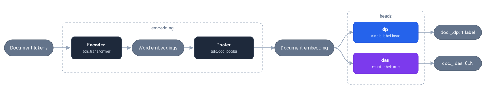

Training a document classifier
In this tutorial, we'll train a document-level classifier with EDS-NLP using the edsnlp.train API. Unlike a NER or a span classifier, which label parts of a document, a document classifier reads the whole note and predicts attributes of the document itself: its type, the diagnoses it should be coded with, the topics it covers.
We'll train a model that codes hospital stays, and predicts at once:
- the principal diagnosis (diagnostic principal, DP): the condition that motivated the admission. A stay has exactly one, so this is a single-label task;
- the associated diagnoses (diagnostics associés significatifs, DAS): the other conditions managed during the stay. A stay has any number of them, so this is a multi-label task.
Architecture

The model is built from three layers, nested inside one another in the config:
- A transformer (
eds.transformer) reads the note and produces one vector per word. - A document pooler (
eds.doc_pooler) collapses them into a single vector for the whole document, by averaging them (mean), keeping the strongest signal per dimension (max), summing them (sum), or learning which words deserve attention (attention). Withuse_cls, it pools the transformer's own[CLS]vectors, one per window, instead of the words. - The classifier (
eds.doc_classifier) feeds that vector to one head per predicted attribute: a single-label head when a document carries exactly one label, a multi-label head (multi_label: true) when it carries a set of them. A head is a plain dict of options, listed in theeds.doc_classifierdocumentation. Each head writes its prediction to theDoc._extension it is named after.
Hardware requirements
Training modern deep-learning models is compute-intensive. A GPU with ≥ 16 GB VRAM is recommended. Training on CPU is possible but much slower: use the cpu=True option.
Creating the dataset
Document-level labels don't fit the standoff format, which annotates offsets inside a text. We store them next to the text instead, in a JSONL file, which edsnlp.data.read_json reads and the eds.omop_dict2doc converter turns into Doc objects. Any column listed in doc_attributes is copied to the matching Doc._ extension, whether it holds a single label or a list:
{"note_id": "201", "note_text": "COMPTE RENDU D'HOSPITALISATION ...", "dp": "J44.0", "das": ["F17.2"]}
{"note_id": "202", "note_text": "COMPTE RENDU D'HOSPITALISATION ...", "dp": "K80.2", "das": []}
We'll use a small synthetic corpus of French clinical notes, available under the tests/training/dataset_3 directory of EDS-NLP's repository. Download it with this link and unzip it into a local dataset directory.
A toy corpus
These notes were generated from a handful of templates, so a model will fit them very quickly and reach scores that mean nothing. They are here to make the code below runnable end to end.
Training the model
Note that we do not list the labels: they are inferred from the training data when train calls nlp.post_init(...). You can also pass labels explicitly, as a list, as the path to a JSON list, or as the path to a text file with one label per line.
# 🤖 PIPELINE DEFINITION
nlp:
'@core': pipeline
lang: eds
components:
coder:
'@factory': eds.doc_classifier
embedding:
'@factory': eds.doc_pooler
pooling_mode: 'mean'
embedding:
'@factory': eds.transformer
model: 'almanach/camembert-bio-base'
window: 128
stride: 96
heads:
# The principal diagnosis: exactly one per stay
dp:
dropout_rate: 0.1
# The associated diagnoses: a set, of any size
das:
multi_label: true
threshold: 0.5 # (1)!
dropout_rate: 0.1
# 📈 SCORER
scorer:
codes:
'@metrics': eds.doc_classification
label_attr: [ 'dp', 'das' ]
# 🎛️ OPTIMIZER
optimizer:
"@core": optimizer !draft # (2)!
optim: torch.optim.AdamW
groups:
# Small learning rate for the pretrained transformer model
- selector: 'coder[.]embedding'
lr:
'@schedules': linear
warmup_rate: 0.1
start_value: 0.
max_value: 5e-5
# Larger learning rate for the heads
- selector: '.*'
lr:
'@schedules': linear
warmup_rate: 0.1
start_value: 3e-4
max_value: 3e-4
# 📚 DATA
train_data:
- data:
'@readers': json
path: './dataset/coding_train.jsonl'
converter:
- '@factory': eds.omop_dict2doc
doc_attributes: [ 'dp', 'das' ]
shuffle: dataset
batch_size: 8 docs
pipe_names: [ "coder" ]
val_data:
'@readers': json
path: './dataset/coding_dev.jsonl'
converter:
- '@factory': eds.omop_dict2doc
doc_attributes: [ 'dp', 'das' ]
# 🚀 TRAIN SCRIPT OPTIONS
train:
nlp: ${nlp}
train_data: ${train_data}
val_data: ${val_data}
max_steps: 600
validation_interval: 150
max_grad_norm: 1.0
scorer: ${scorer}
num_workers: 1
output_dir: 'artifacts'
- The probability above which a diagnosis is kept. It only affects decoding, so you can re-tune it on the dev set after training, without touching the weights.
- The optimizer is a "draft":
traininstantiates it with the pipeline and the number of training steps, which its learning rate schedules need.
python -m edsnlp.train --config configs/coding.yml --seed 42
import edsnlp
import edsnlp.pipes as eds
import torch
from edsnlp.metrics.doc_classification import DocClassificationMetric
from edsnlp.training import ScheduledOptimizer, TrainingData, train
# 🤖 PIPELINE DEFINITION
nlp = edsnlp.blank("eds")
nlp.add_pipe(
eds.doc_classifier(
embedding=eds.doc_pooler(
pooling_mode="mean",
embedding=eds.transformer(
model="almanach/camembert-bio-base",
window=128,
stride=96,
),
),
heads={
# The principal diagnosis: exactly one per stay
"dp": {"dropout_rate": 0.1},
# The associated diagnoses: a set, of any size
"das": { # (1)!
"multi_label": True,
"threshold": 0.5,
"dropout_rate": 0.1,
},
},
),
name="coder",
)
# 📚 DATA
train_docs = edsnlp.data.read_json(
"./dataset/coding_train.jsonl",
converter="omop",
doc_attributes=["dp", "das"],
)
val_docs = edsnlp.data.read_json(
"./dataset/coding_dev.jsonl",
converter="omop",
doc_attributes=["dp", "das"],
)
# 🎛️ OPTIMIZER
optimizer = ScheduledOptimizer.draft( # (2)!
optim=torch.optim.AdamW,
groups=[
{
"selector": "coder[.]embedding",
"lr": {
"@schedules": "linear",
"warmup_rate": 0.1,
"start_value": 0.,
"max_value": 5e-5,
},
},
{
"selector": ".*",
"lr": {
"@schedules": "linear",
"warmup_rate": 0.1,
"start_value": 3e-4,
"max_value": 3e-4,
},
},
],
)
# 🚀 TRAIN
train(
nlp=nlp,
train_data=TrainingData(
data=train_docs,
batch_size="8 docs",
pipe_names=["coder"],
shuffle="dataset",
),
val_data=val_docs,
scorer={"codes": DocClassificationMetric(label_attr=["dp", "das"])},
optimizer=optimizer,
max_steps=600,
validation_interval=150,
grad_max_norm=1.0,
num_workers=0,
output_dir="artifacts",
# cpu=True, # (optional) use CPU instead of GPU/MPS
)
- The probability above which a diagnosis is kept. It only affects decoding, so you can re-tune it on the dev set after training, without touching the weights.
- The optimizer is a "draft":
traininstantiates it with the pipeline and the number of training steps, which its learning rate schedules need.
A single attribute
To predict only one attribute, comment out the other head, and remove it from doc_attributes and from the scorer's label_attr. Keeping dp alone gives a plain single-label classifier, keeping das alone a plain multi-label one.
Partially annotated corpora
A head is only supervised by the documents that carry its gold attribute. You can therefore add a corpus annotated for the principal diagnosis only, such as coding_dp_only.jsonl: its notes train the dp head and the shared embedding, without touching the das one.
train_data:
- data:
'@readers': json
path: './dataset/coding_train.jsonl'
converter:
- '@factory': eds.omop_dict2doc
doc_attributes: [ 'dp', 'das' ]
shuffle: dataset
batch_size: 8 docs
pipe_names: [ "coder" ]
- data:
'@readers': json
path: './dataset/coding_dp_only.jsonl'
converter:
- '@factory': eds.omop_dict2doc
doc_attributes: [ 'dp' ]
shuffle: dataset
batch_size: 8 docs
pipe_names: [ "coder" ]
Use the model
You can now load the trained pipeline and apply it to new notes:
import edsnlp
nlp = edsnlp.load("artifacts/model-last")
doc = nlp(
"Admission pour douleur thoracique constrictive prolongée. "
"La coronarographie retrouve une occlusion de l'artère interventriculaire "
"antérieure, traitée par angioplastie. "
"Pris en charge pendant le séjour : diabète de type 2 déséquilibré, "
"insuline adaptée ; hypertension artérielle mal contrôlée."
)
doc._.dp # (1)!
doc._.das # (2)!
'I21.9': a single code, sincedpis a single-label head.['E11.9', 'I10']: a list of every code whose probability passed the threshold.
To also get the probabilities of the most likely labels, set store_probs: true on the component, optionally with probs_topk and probs_threshold, and read them from doc._.prob["dp"] and doc._.prob["das"].
To run the model over a whole corpus, use the stream API:
docs = edsnlp.data.read_parquet("./notes.parquet", converter="omop")
docs = docs.map_pipeline(nlp)
docs.write_parquet(
"./predictions.parquet",
converter="omop",
doc_attributes=["dp", "das"],
)